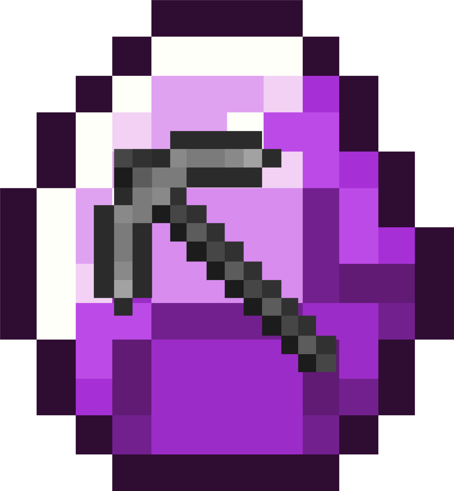

IdyllicMC
play.idyllicmc.xyz
IdyllicMC is a Minecraft server where players can play on an SMP (Survival Multiplayer) server. The server is based on the latest version of Minecraft and has a friendly community. The server has a lot of features such as custom plugins, custom items, and more. Players can join the server by using the IP address play.idyllicmc.com.